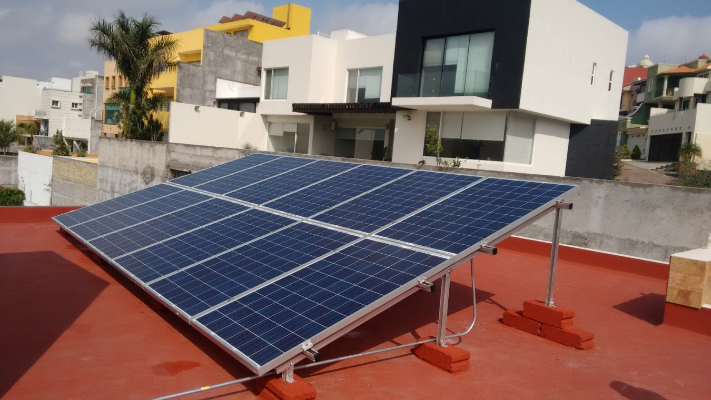
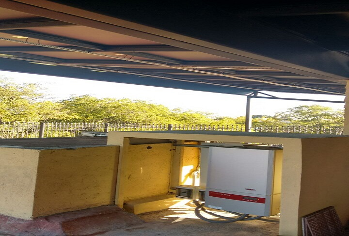
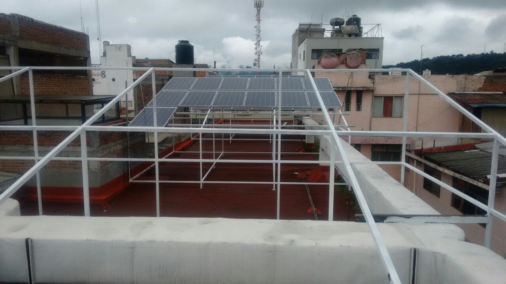

Consejos para un mejor funcionamiento del sistema fotovoltaico.
Claudia Ramírez | 2017-06-15

Con excepción de los paneles solares, todos los equipos se instalan en un sitio protegido de la intemperie, seco, fresco, ventilado y sin polvo. Normalmente se coloca todo en un rincón no usado dentro de la casa o bajo otra protección.

Se pueden montar los paneles en cualquier sitio (evitando sombras), normalmente es sobre un techo o un poste. Las estructuras deben ser suficiente fuertes para resistir a
- Los vientos más fuertes que pueden ocurrir en la zona.
- Eventos sísmicos
- Otras fuerzas como golpes, etc.
